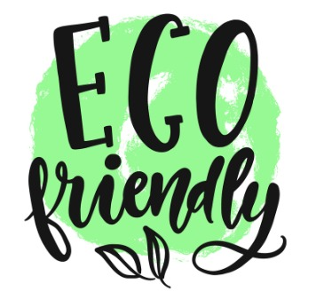

About
Nature Markers es una empresa dedicada a extender la vida de los marcadores a través del rellenado con tintas ecológicas para reducir la contaminación ambiental y llenar de color al planeta.

Nature Markers comenzó como un proyecto denominado "Tintas ecológicas para plumones", el cual tuvo sus inicios en el CBTis No. 271 en Ciudad Victoria, Tamaulipas, México. La idea de lograr que los marcadores dejarán de causar tanta contaminación fue de la alumna Bella Elisabet Perales Meléndez y Alcocer. El proyecto fue presentado por las alumnas Bella Perales y Andrea Silva en diferentes certamenes como ExpoCiencias Nacional Nuevo León 2019 y el Encuentro Nacional de Emprendedores en su etapa local.
©2020 - Nature Markers